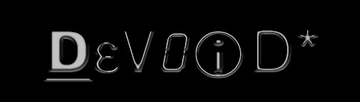

sorry admin, but i just wanted to deliver a message. my message is one of despair and frustration, one of true disappointment. the current "cyber war" between the US and China is completely hypocritical in regards to the ethics of hacking as a whole. if you have read the hacker's manifesto, you know that hackers exist without race and without creed. to me, that is what makes our community so different and so superior.. well at least what made it that way in the past. now we are waging wars with each other, fighting for some kind of recognition as being the 'best' or 'elite', and more and more we are becoming as senseless and unjust as the very company's and people who we despise for being so. we have become a joke because of idiot's who wear our tag and carry our banner as they so recklessly destroy and corrupt information. now i make my plea, a wish for the needless partitioning of the hacker community to cease, and for the unity of our ideas and thoughts to come. i recognize that unfortunately there will always be the lost ones, the misguided, and that's something no one can change. however those of us who understand the essence of our lost cause, the white-hat hackers, must come together and put our differences aside. we are all connected by one divine root, the undeniable electric pulse that has no race and no creed, and that controls far too much of the modern world to be biased or hateful.
original index [ Here ]
:: devoid am i of needless things
regards, DeV0iD*